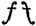

Bap. Why, how now, daughter Katherine? in your dumps?
Shrew. Act III. i. Hortensio and Lucentio, the sham musical and classical tutors, give a lesson to Bianca. They quarrel which is to start first.
Lucentio. Fiddler, forbear: you grow too forward, sir.
* * * * *
Hortensio. But, wrangling pedant, this is
The patroness of heavenly harmony;
Then give me leave to have prerogative,
And when in music we have spent an hour,
Your lecture shall have leisure for as much.
Luc. Preposterous ass, that never read so far
To know the cause why music was ordained!
Was it not to refresh the mind of man,
After his studies, or his usual pain?
Then give me leave to read philosophy,
And while I pause, serve in your harmony.
Bianca settles the question, and orders Hortensio (l. 22):
Take you your instrument, play you the whiles;
His lecture will be done, ere you have tun'd.
Hor. You'll leave his lecture, when I am in tune?
Luc. That will be never: tune your instrument.
Lucentio now goes on with his 'classics'; further on—
Hor. [Returning]. Madam, my instrument's in tune.
Bianca. Let's hear. [Hor. plays.] O fie! the treble jars.
Luc. Spit in the hole, man, and tune again.
* * * * *
Hor. Madam, 'tis now in tune.
Luc.All but the base.
Hor. The base is right; 'tis the base knave that jars.
Hortensio now takes his place, and addresses the classical Lucentio—
L. 58.
Hor. You may go walk, and give me leave awhile:
My lessons make no music in three parts.
* * * * *
L. 63.
Hor. Madam, before you touch the instrument,
To learn the order of my fingering,
I must begin with rudiments of art;
To teach you gamut in a briefer sort.
* * * * *
Bianca. Why, I am past my gamut long ago.
Hor. Yet read the gamut of Hortensio.
The first of these three passages will be quite clear to the reader in the light of the remarks on the lute already made. The second should be read in connection with the name of the doleful dance above mentioned, the Dump. [See Appendix.]
The third quotation contains interesting allusions to the peculiarities of the lute. Lines 22-25 are very naturally accounted for. The lute, having at least eleven strings, took a long time to get into tune. Even our modern violins, with only four strings, want constant attention in this respect; and the lute, therefore, especially in the hands of an amateur, might well get a name for being a troublesome instrument. The reference to the 'treble' and 'bass' strings (i.e., the 1st and 6th) has been explained before. 'Spit in the hole, man,' Lucentio's very rude advice to Hortensio, will direct our attention to the variously shaped 'holes' which were made in the belly of all stringed instruments to let out the sound. On the lute, this hole was commonly a circular opening, not clearly cut out, but fretted in a circle of small holes with a star in the middle. But this was not the only way. A lute in South Kensington Museum has three round holes, placed in an oblique line, nearly at the bottom of the instrument.[14] The holes on the viol were generally in the form of crescents, and were put one on each side of the bridge. On the modern violins, as everybody has seen, they are in the shape of , and are known as 'f' holes.
Line 59, about 'lessons in three parts,' is of interest. Primarily, it is another form of 'Two's company, three is none'—but its musical meaning is very plainly present. In the 16th and 17th centuries it was very common to call the pieces of music in any volume for an instrument by the name 'Lessons.' The first meaning, of course, was that they were examples for the pupil in music, but the word was used quite freely with the purely general signification of 'Pieces' or 'Movements.'
One more word deserves remark—viz., 'to touch,' in line 63. This is used technically, and means strictly 'to play' on the instrument. The word comes both in meaning and form from Ital., toccare.
Toccata was a common word for a Prelude (often extempore), intended as a kind of introduction to two or three more formal movements. The Italian for a peal of bells is tocco di campana, and we have the word in English under the form tocsin, an alarm bell. The trumpet-call known as 'Tucket,' which occurs seven times in the stage directions of six Shakespeare plays, and is also found once in the text (Henry V. IV, ii, 35), also is derived from toccare. Similarly with the German 'Tusch,' a flourish of trumpets and other brass instruments, which may be heard under that name to the present day.
The next passage confirms Morley's account of the high estimation in which music was held as a part of a liberal education. Baptista evidently considers 'good bringing up' to include 'music, instruments, and poetry.' Moreover, the visiting master was to be well paid,—'to cunning men I will be very kind.'
Shrew I, i, 81.
Bianca. Sir to your pleasure humbly I subscribe:
My books, and instruments, shall be my company,
On them to look, and practise by myself.
* * * * *
Baptista (To Hortensio and Gremio).
Go in, Bianca. [Exit Bianca].
And for I know, she taketh most delight
In music, instruments, and poetry,
Schoolmasters will I keep within my house,
Fit to instruct her youth.—If you, Hortensio,
Or Signior Gremio, you, know any such,
Refer them hither; for to cunning men
I will be very kind, and liberal
To mine own children in good bringing up.
We find further on, in the same play, that to bring one's lady-love a music master was thought a handsome compliment.
Shrew I, ii, 170.
Hortensio. 'Tis well: and I have met a gentleman,
Hath promis'd me to help me to another,
A fine musician to instruct our mistress.
Moreover, in Pericles IV, vi, 185, we find that Marina, daughter of Prince Pericles, can 'sing, weave, sew, and dance.' Also see V, i, 78, where Marina actually does sing, to rouse her father from his melancholy.
It is impossible here to give even an outline of the history of Songs and Singing in England. The general statement must suffice that vocal music, accompanied by viols and harps, with songs and catches, were common in the year 1230 in France; and any reader of Chaucer and Gower may see for himself that vocal music was flourishing in the 14th century in England. The English Round or Catch, mentioned above, 'Sumer is icumen in,' is most probably of the 13th century, and that alone would be sufficient to characterise the popular vocal music of that day. This composition is advanced in every way, being very melodious, and at the same time showing that vocal harmony (i.e., singing in parts) was greatly appreciated.
To proceed to a time nearer the age with which we are concerned—in Henry VII.'s reign, there were many songs written, some for voices only, and some with instrumental accompaniment. Amongst the former are two songs in three parts, the music by William Cornyshe, Junior, which are given in Hawkins.
Skelton wrote the words of the first, 'Ah, beshrew you by my fay,' which is very coarse in tone, as was frequently the case with him; and the second one, 'Hoyday, jolly ruttekin,' is a satire on the drunken habits of the Flemings who came over with Anne of Cleves. Mrs Page (Wiv. II, i, 23) refers to these Dutchmen, where, after receiving Falstaff's love-letter, she exclaims, 'what an unweighed behaviour hath this Flemish Drunkard picked (with the devil's name!) out of my conversation, that he dares in this manner assay me?'
The following is a curious picture by 'Skelton, Laureate,' of an ignorant singer, who appears to have been throwing mud at the poet. Skelton gives us a sad account both of his morals and his music.
The 3rd verse begins—
| With hey troly loly, lo whip here Jak, Alumbek, sodyldym syllorym ben, Curiously he can both counter and knak, Of Martin Swart, and all his merry men; Lord, how Perkyn is proud of his Pohen, But ask wher he findeth among his monachords An holy-water-clark a ruler of lordes. He cannot fynd it in rule nor in space, He solfyth too haute, hys trybyll is too high, He braggyth of his byrth that borne was full base, Hys musyk withoute mesure, too sharp, is his 'my', He trymmeth in his tenor to counter pardy, His descant is besy,[15] it is without a mene, Too fat is his fantsy, his wyt is too lene. He tumbryth on a lewde lewte, Rotybulle Joyse, Rumbill downe, tumbill downe, hey go, now now, He fumblyth in his fyngering an ugly rude noise, It seemyth the sobbyng of an old sow: He wolde be made moch of, and he wyst how; Well sped in spindels and tuning of travellys A bungler, a brawler, a picker of quarrels. Comely he clappyth a payre of clavicordys He whystelyth so swetely he maketh me to swet, His discant is dashed full of discordes, A red angry man, but easy to intrete; etc. |
Further on we read—
| For lordes and ladyes lerne at his scole, He techyth them so wysely to solf and to fayne, That neither they sing wel prike-song nor plain. |
Skelton's main objection to this person is that he, being in reality of very humble origin, presumed on his very doubtful musical abilities to gain a footing amongst his betters. As he says, 'For Jak wold be a Jentilman that late was a grome.'
Evidently 'Jak' had managed to make good his position as a fashionable teacher of singing, in spite of the defects plainly mentioned in the above verses. In the first verse, 'counter' is a musical term, here used with the meaning of 'to embroider' the tale. 'Knack' is still used in Yorkshire for 'affected talk.' 'Monachord' is the ancient one-stringed fiddle called Tromba Marina, and is here used as a joke on 'monachi' or 'holy water clarks.' In verse 2, 'rule and space' is simply 'line and space,' i.e., on the musical staff. 'Solfyth too haute' is 'Solfa's too high.' The 'my' which was 'too sharp' is the Mi, the seventh note of the scale, mentioned above as the critical point in Solfa. In verse 3, 'lewde lewte' means merely 'vulgar lute'; and 'Rotybulle Joyse' is the title of an old song. The 'payre of clavicordys' is the clavichord, which in 1536 was a keyed instrument of much the same kind as the virginals,[16] with about three and a half octaves. It was used by nuns, and therefore had its strings muffled with bits of cloth to deaden the sound.
The last three lines quoted mention 'solfa' and 'fayne.' The latter is 'feigned' music, or Musica Ficta, which at this time was the art of dislocating the 'Mi,' so as to change the key. It was seldom that more than one flat was found in those days, and this would move the Mi from B to E, thus constituting 'fayned' music.
This account will give a general idea of the kind of songs and singing that were to be found in 1500.
Popular songs, 'Rotybulle Joyse,' with a burden of 'Rumbill downe, tumbill downe,' etc., accompanied by a 'lewde lewte'; clavichord playing; solfaing; singing of both 'prick-' and 'plain-' song, with Musica Ficta; besides the delectable art of 'whysteling'; seem to have been matters in ordinary practice at the beginning of the 16th century. Add to these the songs in three parts, with rounds or catches for several voices, and we have no mean list of musicianly accomplishments, which the men of Shakespeare's day might inherit.
In Shakespeare, besides the songs most commonly known (some of which are by earlier authors), there are allusions to many kinds of vocal music, and scraps of the actual words of old songs—some with accompaniment, some without; a duet; a trio; a chorus; not to mention several rounds, either quoted or alluded to.
It will be useful here to refer to a few of these less known examples.
L.L.L. I, ii, 106. The Ballad of 'The King and the Beggar.' Moth says "The world was very guilty of such a ballad some three ages since; but I think now 'tis not to be found; or, if it were, it would neither serve for the writing, nor the tune."
Id. III, i, 2. Moth begins a song 'Concolinel,' which Armado calls a 'sweet air.'
Various snatches of ballads, ancient and modern—e.g.,
(a) By Falstaff. H. 4. B. II, iv, 32, 'When Arthur first in court began,' 'And was a worthy king.'
(b) By Master Silence. H. 4. B. V, iii, 18. 'Do nothing but eat, and make good cheer,' etc.; 'Be merry, be merry, my wife has all,' etc.; 'A cup of wine, that's brisk and fine,' etc. 'Fill the cup, and let it come,' etc.; 'Do me right, And dub me knight,' etc.; 'and Robin Hood, Scarlet, and John.'
(c) By Benedick, Much Ado V, ii, 23. 'The god of love.'
(d) The old tune 'Light o' love' [see Appendix], the original words of which are unknown. Much Ado III, iv, 41, 'Clap us into "Light o' love;" that goes without a burden; do you sing it, and I'll dance it.' Here is one verse of 'A very proper Dittie,' to the tune of "Lightie Love" (date 1570).
| "By force I am fixed my fancie to write, Ingratitude willeth me not to refrain: Then blame me not, Ladies, although I indite What lighty love now amongst you doth rayne, Your traces in places, with outward allurements, Dothe moove my endevour to be the more playne: Your nicyngs and tycings, with sundrie procurements, To publish your lightie love doth me constraine." |
There were several songs of the 16th century that went to this tune. See also Shakespeare, Gent. I, ii, 80, and Fletcher, Two Noble Kinsmen V, ii, 54.
(e) Song by Parson Evans, Wiv. III, i, 18; 'To shallow rivers,' for words of which see Marlowe's 'Come live with me,' printed in the 'Passionate Pilgrim,' Part xx. [see tunes in Appendix]. Sir Hugh is in a state of nervous excitement, and the word 'rivers' brings 'Babylon' into his head, so he goes on mixing up a portion of the version of Ps. cxxxvii. with Marlowe.
(f) By Sir Toby. Tw. Nt. II, iii, 79, 85, 102. Peg-a-Ramsey, 'Three merry men be we,' 'There dwelt a man in Babylon,' 'O! the twelfth day of December,' 'Farewell, dear heart.' [For tunes, see Appendix].
(g) As You Like It II, v. Song with Chorus, 'Under the greenwood tree,' 2nd verse 'all together here.'
(h) By Pandarus, Troil. III, i, 116. Song, 'Love, love, nothing but love,' accompanied on an 'instrument' by the singer himself.
(i) Another, Id. IV, iv, 14, 'O heart, heavy heart.'
(j) Lear I, iv, 168, two verses sung by the Fool, 'Fools had ne'er less grace in a year.'
(k) Ballads by Autolycus, Winter's Tale IV, ii, 1, 15. 'When daffodils,' 'But shall I go mourn for that.' Id. sc. ii. end, 'Jog on' [see Appendix]; Id. sc. iii. 198, 'Whoop, do me no harm, good man' [Appendix]; Id. l. 219, 'Lawn, as white as driven snow'; Id. l. 262, Ballad of the 'Usurer's wife,' to a 'very doleful tune'; Id. l. 275, Ballad of a Fish, 'very pitiful'; Id. l. 297, A song in three parts, to the tune of 'Two maids wooing a man,' "Get you hence, for I must go"; Id. l. 319, Song, 'Will you buy any tape' (cf. The round by Jenkins, b. 1592, 'Come, pretty maidens,' see Rimbault's Rounds, Canons, and Catches).
(l) Duet by King Cymbeline's two sons; Funeral Song over Imogen, Cymb. IV, ii, 258, 'Fear no more the heat of the sun.'
(m) Stephano's 'scurvy tunes,' Temp. II, ii, 41, 'I shall no more to sea,' 'The master, the swabber,' etc. [Appendix]. Id. l. 175, Caliban's Song, 'Farewell, master,' etc.
(n) Song accompanied by lute. H. 8. III, i. 'Orpheus.'
Besides these there are allusions to the names of various popular tunes and catches, of which the music is still to be had. Amongst these are—
'The Hunt is up' [Appendix]. See Rom. and Jul. III, v, 34. Juliet says of the lark's song, 'that voice doth us affray, Hunting thee hence with hunts-up to the day.' Any rousing morning song, even a love-song, was called a hunts-up. The tune of this song was also sung (in 1584) to 'O sweete Olyver, leave me not behind the,' but altering the time to 4 in a bar. See As You Like It III, iii, 95.
'Heart's ease' [Appendix], the words of which are not known. Tune before 1560. See Romeo IV, v, 100.
Id., 'My heart is full of woe.'
Id. l. 125. 'When griping grief' [Appendix], by Richard Edwards, gentleman of Queen Elizabeth's Chapel, printed in the 'Paradyse of daynty Devises' (printed 1577). Hawkins gives four verses, the first of which is here quoted by Shakespeare, but with several variations—
| 'Where griping grief the hart would wound, And doleful domps the mind oppresse, There Musick with her silver sound Is wont with spede to give redresse; Of troubled minds, for every sore, Swete Musick hath a salve in store.' |
The last verse is charming—
| 'Oh heavenly gift, that turnes the minde, Like as the sterne doth rule the ship, Of musick whom the Gods assignde, To comfort man whom cares would nip; Sith thou both man and beast doest move, What wise man then will thee reprove.' |
'Green Sleeves' [Appendix].
Wiv. II, i, 60.
Mrs Ford. ... I would have sworn his disposition [Falstaff's] would have gone to the truth of his words; but they do no more adhere and keep place together, than the Hundredth Psalm to the tune of 'Green Sleeves.'
Also see Wiv. V, v, 20. The tune is given in its most complete form by Chappell, and is probably of Henry VIII.'s time. The ballad was published in 1580, with title, 'A new Northerne dittye of the Ladye Greene Sleeves.' Verse 1 is as follows:—
| "Alas my love, you do me wrong To cast me off discourteously, And I have lovèd you so long, Delighting in your company. Greensleeves was all my joy, Greensleeves was my delight, Greensleeves was my heart of gold, And who but my Lady Greensleeves." |
The 'Hundredth Psalm' (All people that on earth do dwell) will only adhere and keep place with the tune of Green Sleeves to a certain extent. If the reader will try to sing it to the tune in the Appendix, he will find that in the first half he is led into several false accents; while the second half is quite unmanageable without altering the notes. There is, however, a form of the tune in Hawkins which is much further off 'the truth of the words,' for it has exactly the right quantity of notes, but the accents are all as wrong as possible, thus—
It may be that this form of 'Green Sleeves' was known better than the older one in Shakespeare's day.
'Carman's whistle' [Appendix].
H. 4. B. III, ii, 320. Falstaff soliloquises on Shallow's lies concerning his wild youth.
Fal. He (Shallow) came ever in the rearward of the fashion, and sung those tunes ... that he heard the carmen whistle, and sware—they were his fancies, or his goodnights.... The case of a treble hautboy was a mansion for him, a court.
The Carman's Whistle was a popular Elizabethan tune, and was arranged as a virginal lesson by Byrd. This arrangement can be had most readily in Litolff's publication, 'Les maîtres du Clavecin.'
The 'fancies' referred to above are the 'Fantazies' already remarked on (chest of viols); and the 'Goodnights' are songs in memoriam, or dirges.
'Fortune my foe.' [Appendix]. Merry Wives III, iii, 62. Falstaff (to Mrs Ford). 'I see what thou wert, if Fortune thy foe were not, Nature thy friend.' This old tune is at latest of Elizabeth's time, and was sung to the ancient ballad of "Titus Andronicus." The first verse of 'Fortune my foe' is as follows:—
| "Fortune my foe, why dost thou frown on me? And will thy favour never better be? Wilt thou, I say, for ever breed my pain, And wilt thou not restore my joyes again?" |
'Ophelia's Songs.' Hamlet IV, v. [Appendix]. 'How should I your true love know'; 'Good morrow, 'tis St Valentine's day'; 'They bore him barefaste'; 'Bonny sweet Robin'; 'And will he not come again.'
The one line of 'Bonny sweet Robin' is all that remains of the song, except the title, which is also the first line—viz., 'My Robin is to the greenwood gone.' The line Shakespeare gives would be the last. One tune to it is at any rate older than 1597.
Lastly, there are the old catches, 'Hold thy peace,' sung by Toby, Sir Andrew, and Feste in Twelfth Night II, iii; 'Jack boy, ho boy, news, The cat is in the well,' etc., referred to by Grumio in Shrew IV, i, 42; besides 'Flout 'em and scout em,' sung by Stephano, Trinculo, and Caliban in Tempest III, ii; and 'What shall he have that killed the deer,' for the foresters in As You Like It IV, ii, 5. The original music of the first two, probably much earlier than Shakespeare, is in the Appendix. A Round for four voices by John Hilton (flourished 1600) to 'What shall he have,' is probably the first setting, and may be seen in Rimbault, p. 19. Purcell (1675) set 'Flout 'em' as a catch for three voices, which is in Caulfield's Collection of Shakespeare Vocal Music, 1864. These last two are poor specimens of Catches, so they are not printed here. [The proper reading of 'Flout 'em,' in the 4tos and 1st Fol. is 'Flout 'em and cout 'em! and skowt 'em, and flout 'em! Thought is free.']
The following passage contains a large quantity of the history of songs in the 16th century, and is one of the most important to be found in Shakespeare. Autolycus sells ballads 'of all sizes' among his wares; the country folk, Mopsa, Dorcas, and the Clown, buy them, and afterwards sing them; and the rustic servant distinctly prefers the pedlar's vocalisation to their accustomed 'tabor and pipe,' or even to the 'bagpipe.'
Winter's Tale IV, iii, 181.
Servant. O master! if you did but hear the pedlar at the door, you would never dance again after a tabor and pipe; no, the bagpipe could not move you. He sings several tunes faster than you'll tell money; he utters them as he had eaten ballads, and all men's ears grew to his tunes.
Clown. He could never come better: he shall come in. I love a ballad but even too well; if it be doleful matter, merrily set down, or a very pleasant thing indeed, and sung lamentably.
Serv. He hath songs, for man or woman, of all sizes.... He has the prettiest love-songs for maids; so without bawdry, which is strange; with such delicate burdens of "dildos" and "fadings," "jump her and thump her"; ... "Whoop, do me no harm, good man."
L. 212.
Clo. Pr'ythee, bring him in, and let him approach singing.
Perdita. Forewarn him, that he use no scurrilous words in 's tunes.
L. 259.
Clo. [to Autolycus]. What hast here? ballads?
Mopsa. 'Pray now, buy some: I love a ballad in print, o' life, for then we are sure they are true.
Autolycus. Here's one to a very doleful tune ... [of a usurer's wife].
L. 273.
Clo. Come on, lay it by: and let's first see more ballads....
Aut. Here's another ballad, of a fish, that ... sung this ballad against the hard hearts of maids: ... the ballad is very pitiful, and as true.
L. 285.
Clo. Lay it by too: another.
Aut. This is a merry ballad, but a very pretty one.
Mop. Let's have some merry ones.
Aut. Why, this is a passing merry one, and goes to the tune of "Two maids wooing a man," there's scarce a maid westward but she sings it: 'tis in request, I can tell you.
Mop. We can both sing it: if thou'lt bear a part [i.e., Autolycus], thou shalt hear; 'tis in three parts.
Dorcas. We had the tune on't a month ago.
Aut. I can bear my part; you must know, 'tis my occupation: have at it with you.
[They sing 'Get you hence,' in three parts.]
Clo. We'll have the song out anon by ourselves.
L. 328.
Servant. Master, there is three carters, three shepherds, three neat herds, three swine herds, that have made themselves all men of hair: they call themselves Saltiers; and they have a dance, which the wenches say is a gallimaufry of gambols, because they are not in't....
* * * * *
L. 609.
Aut. My clown (who wants but something to be a reasonable man) grew so in love with the wenches' song, that he would not stir his pettitoes, till he had both tune and words.
The tabor and pipe, in the servant's first speech, were common popular instruments. The tabor, of course, was a small drum, which was used as accompaniment to the pipe, a small whistle with three holes, but with a compass of 18 notes. (See Frontispiece.) In its curiously disproportionate compass, it may be compared to the modern 'Picco' pipe of the music shops. Mersennus (middle of 17th century) mentions an Englishman, John Price, who was an accomplished player. It is played on by Ariel, see a subsequent quotation from The Tempest III, ii, 126 and 152. Also Much Ado II, iii, 13; and the tabor alone, in Twelfth Night III, i.
The Bagpipe[17] was very similar to the instruments of that name which still exist. At the present moment there are four kinds in use—Highland Scotch, Lowland Scotch, Northumbrian, and Irish. The last has bellows instead of a 'bag,' but in other ways they are very much alike. They all have 'drones,' which sound a particular note or notes continually, while the tune is played on the 'chanter.' Shakespeare himself tells us of another variety—viz., the Lincolnshire bagpipe, in Hen. 4. A. I, ii, 76, where Falstaff compares his low spirits to the melancholy 'drone of a Lincolnshire bagpipe.'[18]
The servant's second speech refers to the character of the words of the popular ballads, which were too often coarse and even indecent.
'Love-songs' are quite a large class, frequently referred to. For instance, Two Gent. II, i, 15.
Val. Why, how know you that I am in love?
Speed. Marry by these special marks.
First, you have learn'd ...
To relish a love song, like a robin-redbreast;
Rom. II, iv, 15.
Mercutio. 'Alas, poor Romeo! he is already dead;
... run thorough the ear with a love-song.'
besides the passage from Twelfth Nt. II, iii, quoted further on, where Feste offers Sir Toby and Sir Andrew their choice between 'a love-song, or a song of good life.'
The 'delicate burdens,' 'dildos and fadings,' 'jump her and thump her,' are to be found in examples of the period. A Round of Matt. White, 'The Courtier scorns the country clowns' (date about 1600) has for its third and last line 'With a fading, fading, fading, fading,' etc. 'Whoop, do me no harm' has already been spoken of.
In l. 214 of the Winter's Tale passage, Perdita again takes precaution against Autolycus using 'scurrilous words.'
From l. 285 to l. 327, the passage refers to a very interesting department of 16th century singing—viz., the habit of performing songs in three vocal parts. The singers were called Threeman-songmen, and the songs themselves 'Threeman songs,' or 'Freemen's Songs.' [Freemen is simply a corruption of Threemen. Mr Aldis Wright tells me it is analogous to Thills or Fills, for the shafts of a waggon. Rimbault, in the preface to 'Rounds, Canons, and Catches,' is highly indignant with Ritson's 'inconceivably strange notion' that Freemen is only a form of Threemen. Rimbault's reason was that 'Deuteromelia' (1609) does contain Freemen's Songs in four parts. Mr Aldis Wright also gives me the expression 'six-men's song,' from Percy's Reliques, also these definitions, which will all go to settle the matter: Florio, Italian Dictionary, 1611; Strambotti, country gigges, rounds, catches, virelaies or threemen's songs; Cantarini, such as sing threemen's songs; Berlingozzo.... Also a drunken or threemen's song.
Cotgrave, French Dict. 1611; Virelay. m. A virelay, round, freemans song].
Giraldus Cambrensis says that singing in parts was indigenous to the parts beyond the Humber, and on the borders of Yorkshire. Threeman singing may still be heard (not as an exotic), in Wales and the West of England. This last is referred to in the above passage, 'There's scarce a maid westward but she sings it'—viz., the song in three parts.
Shakespeare is strictly historical in making a pedlar, and two country lasses, capable of 'bearing a part' in a composition of this sort.
The company of 'men of hair,' calling themselves 'Saltiers,' may derive their name from the dance, 'Saltarello.' Gallimaufry is 'Galimathias,' a muddle, or hotch potch. (See Merry Wives II, i, 115).
The threemansong men are more particularly described in Winter's Tale IV, ii, 41.
Clown. She hath made me four-and-twenty nosegays for the shearers; three-man song-men all, and very good ones, but they are most of them means and bases; but one Puritan amongst them, and he sings psalms to hornpipes.
These musical harvesters square closely with the account given in the Introduction, of music amongst the lower classes. Here were 24 good glee singers, with the single defect that their tenors were very weak, 'most of them means [altos] and basses.' The Puritan was most accommodating, and his singing the words of psalms to the tune of the hornpipe would tend to shew that the Old Adam was not all put away as yet. His compromise with his conscience reminds one of the old stories (all too true) of church singers in the 15th and 16th centuries, who would sing the by no means respectable words of popular comic ditties to the solemn strains of the mass 'l'homme armé,' or whatever well-known melody the music happened to be constructed on.
An example of a threemansong will be found in the Appendix, 'We be soldiers three.'
Shakespeare also alludes to sacred part-music. Falstaff, by his own account, was a notable singer of Anthems, in which holy service he had lost his voice; he was familiar with members of the celebrated choir of St George's Chapel at Windsor; and was not above practising the metrical Psalmody in his sadder moments.
H. 4. B. I, ii, 182.
Chief Justice. Is not your voice broken, your wind short, your chin double, your wit single, and every part about you blasted with antiquity, and will you yet call yourself young? Fie, fie, fie, Sir John!
Falstaff. My lord.... For my voice, I have lost it with hollaing, and singing of anthems.
H. 4. B. II, i, 88.
Hostess. Thou didst swear to me ... upon Wednesday in Wheeson week, when the prince broke thy head for liking his father to a singing-man of Windsor.
Hen. 4. A. II, iv, 137. Falstaff laments the degeneracy of the times.
Fal. There live not three good men unhanged in England, and one of them is fat, and grows old; God help the while! a bad world, I say. I would I were a weaver; I could sing psalms or anything.
This last sentence connects curiously with Sir John Oldcastle, the leader of the Lollards, who were noted for their psalm singing, which indeed gave them the name. These Flemish Protestants, who had fled from the persecutions in their own country, were mostly woollen manufacturers, and were distinguished for their love of Psalmody, throughout the western counties, where they settled. Hence the allusion to 'weavers' and 'Psalms.' But according to the Epilogue of Hen. 4. B., 'Oldcastle died a martyr, and this is not the man.'
Falstaff knew well what a Ballad was too—as the following shews:—
Hen. 4. A. II, ii, 43.
Fal. (to Hal.). Go hang thyself in thine own heir-apparent garters! If I be ta'en, I'll peach for this. An I have not ballads made on you all, and sung to filthy tunes, let a cup of sack be my poison.
Two other worthy knights claim our attention in the next quotation, which contains many interesting allusions. Inter alia; Sir Toby gives Feste sixpence to sing a song; Sir Andrew follows it up with a 'testril.' The Clown then sings them 'O mistress mine.' [For the original music see Prof. Bridge's 'Shakespeare Songs,' Novello, a collection which every reader of Shakespeare ought to have. Price 2s. 6d.] Then, at Sir Toby's suggestion, they all three sing a catch, or, in his own words, 'draw three souls out of one weaver,' an allusion to the three vocal parts which are evolved from the one melody of the catch, as well as a sly reference to 'weavers' singing catches. (See Introduction.) They sing 'Thou knave,' for which see the Appendix. It is not a good catch, but sounds humorous if done smartly, and perhaps its very roughness suits the circumstances. Next, after Maria's entrance, Toby either quotes the titles, or sings odd lines of four old songs [Appendix]; and when Malvolio comes in, furious with the noise they are making in the middle of the night, he applies precisely those epithets to their proceedings that our histories lead us to expect—e.g., 'gabbling like tinkers,' 'alehouse,' squeaking out your 'cozier's catches' ['cozier' is 'cobbler']. Sir Toby's puns on 'keep time' in ll. 94 and 115 ought not to be missed. To 'keep time' is almost the only virtue a catch singer must have.
Tw. II, iii, 18.
Sir To. Welcome, ass. Now let's have a catch.
Sir And. By my troth, the fool has an excellent breast. I had rather than forty shillings I had such a leg, and so sweet a breath to sing, as the fool has.
L. 30.
Sir And. Now, a song.
Sir To. Come on; there is sixpence for you; let's have a song.
Sir And. There's a testril of me too; if one knight give a——
Clown. Would you have a love-song, or a song of good life?
Sir To. A love-song, a love-song.
Sir And. Ay, ay; I care not for good life.
[Clown sings 'O mistress mine.']
Sir And. A mellifluous voice, as I am true knight.
Sir To. A contagious breath.
Sir And. Very sweet and contagious, i'faith.
Sir To. To hear by the nose, it is dulcet in contagion. But shall we make the welkin dance indeed? Shall we rouse the night-owl in a catch, that will draw three souls out of one weaver? Shall we do that?
Sir And. An you love me, let's do't: I am dog at a catch.
Clo. By'r lady, sir, and some dogs will catch well.
Sir And. Most certain. Let our catch be, "Thou Knave."
Clo. "Hold thy peace, thou knave," knight? I shall be constrained to call thee knave, knight.
Sir And. 'Tis not the first time I have constrained one to call me knave. Begin, fool: it begins, "Hold thy peace."
Clo. I shall never begin, if I hold my peace.
Sir And. Good, i'faith. Come, begin.
[They sing a catch.]
Enter Maria.
Mar. What a caterwauling do you keep here!
* * * * *
Sir To. My lady's a Cataian; we are politicians; Malvolio's a Peg-a-Ramsey, and "Three merry men be we."... Tilly-valley, lady! [Sings.] "There dwelt a man in Babylon, lady, lady!"
* * * * *
Sir To. [Sings.] "O! the twelfth day of December."——
Mar. For the love o'God, peace!
Enter Malvolio.
Mal. My masters, are you mad? or what are you? Have you no wit, manners, nor honesty, but to gabble like tinkers at this time of night? Do ye make an alehouse of my lady's house, that ye squeak out your cozier's catches without any mitigation or remorse of voice? Is there no respect of place, persons, or time in you?
Sir To. We did keep time, sir, in our catches. Sneck up!
L. 103-114, another song, "Farewell, dear heart" [Appendix].
It is perhaps necessary to explain the nature of a Catch, or Round, more clearly. The two names were interchangeable in the 16th and 17th centuries. It was not till quite modern times that 'Catch' implied a necessary quibble in the words, deliberately arranged by the writer. First, a Catch or Round of the best type of Elizabethan times consisted of one melody, generally perfectly continuous. Secondly, the said melody was always divisible into a certain number of equal sections, varying from three to six, or even eight; and as many sections as there were, so many voices were necessary. Thirdly, each of these equal sections was deliberately arranged so as to make Harmony with every other.
Here are the words of a Round of the 17th century, which is divisible into three equal sections, and therefore is sung by three voices.